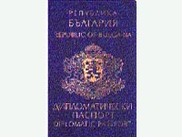
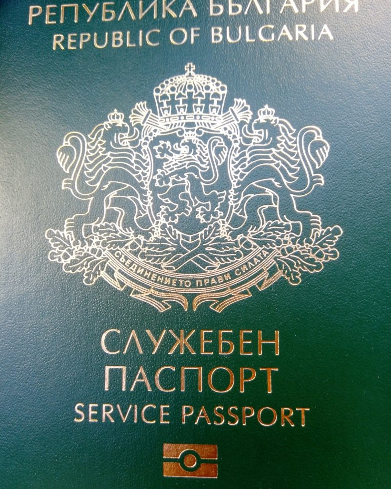
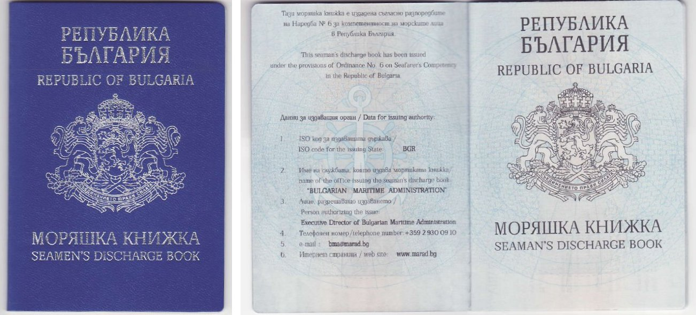

Издаване на дипломатически паспорт - издава се от министъра на външните работи или от оправомощени от него длъжностни лица след извършване на проверка за наличието на законово основание за неговото издаване На основание на: Закон за българските лични документи - чл. 38 Срок за предоставяне: От 7 до 10 дни - обикновена услуга; от 3 до 5 дни – бърза услуга; 8 работни часа – експресна услуга; Срок на действие на документа/индивидуалния административен акт: до 5 години
Служебният паспорт дава право да се пътува без виза до някои държави и нищо повече – така зам.-министър Георг Георгиев коментира издаването от МВнР на служебни паспорти на Васил Божков и съдружника му Георги Попов пред бТВ. Изглежда, че тактиката на Външно е да се омаловажава този скандал, разкрит от Биволъ. Проверката на фактите, извършена от нашето издание обаче показва, че служебният паспорт дава доста повече защита от обикновения паспорт. Служебният паспорт се отличава от обикновения с корицата си, която е тъмнозелена на цвят. Ето как изглежда тя.
Морските лица удостоверяват самоличността си и преминават границите на страните с моряшки паспорт. Със записите в моряшкия паспорт удостоверяват плавателния стаж на корабите. На основание на: Закон за българските лични документи - чл. 38, ал. 1, т. 4 Правилник за издаване на българските лични документи - чл. 7, ал. 1 Услугата се предоставя от централните администрации: Изпълнителна агенция "Морска администрация"
